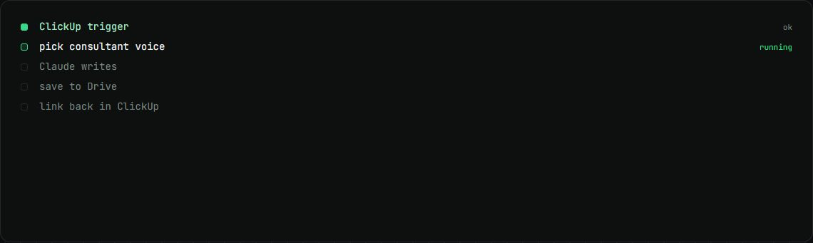
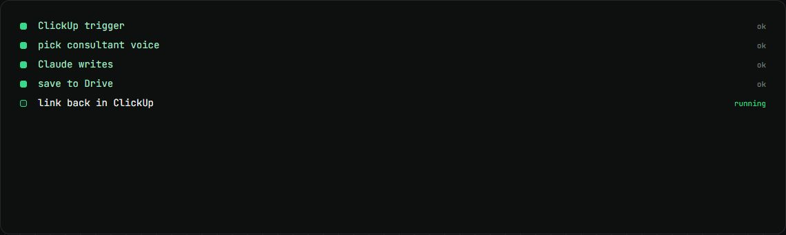

AI proposal engine
A ClickUp click turns a job post into a proposal in the right consultant's voice.
my role I maintain and upgraded it: model move, prompt fixes and cost logging, 24 commits.
The problem
Seven consultants each need proposals in their own voice, quickly, without copy and paste between tools.
How it works
- A ClickUp trigger sends the job and the chosen consultant.
- The workflow picks that consultant's voice, and Claude writes the proposal.
- Code adds the portfolio link, so the model never invents one.
- The proposal is saved to Google Drive and linked back in ClickUp.
What changed
- $0.03per proposal
- 7consultant voices
- 133 to 137words against a 100 to 140 target
What I built
- Moved it to Claude Sonnet 5.5, which brought proposals into the 100 to 140 word target.
- Fixed broken characters across six prompt nodes.
- Cost logging on every run.
Stack
- n8n
- Claude Sonnet
- ClickUp
- Google Drive
Stills

